AdMagic is founded on the belief that a business has a responsibility beyond revenue. Here's where we put our time, energy, and resources — in the real world, with real people.
Last updated: October 2026 · Founder-led initiatives
MBCN Special School serves 500+ enrolled students across a wide spectrum of physical, intellectual, and developmental needs. We show up — not with cheques, but in person.
We take students who are non-verbal on real-world excursions — visiting medical stores so they can practise ordering their own medicines, going to movies with kids who have multiple disabilities and neurological disorders. The goal is life-skills and dignity, not just classroom time.
MBCN serves students across several key areas:
These experiences — joining a kid who has never been to a cinema, watching them react to the big screen for the first time — are the kind of moments no campaign can manufacture. They are just real.
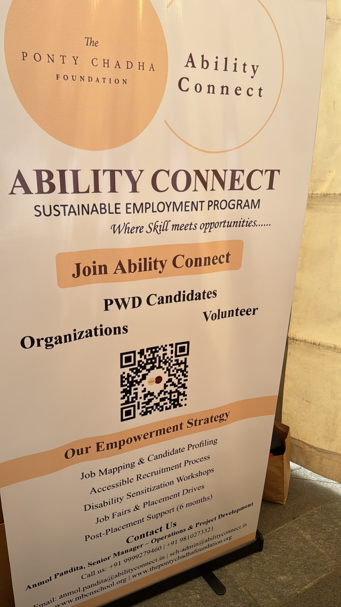
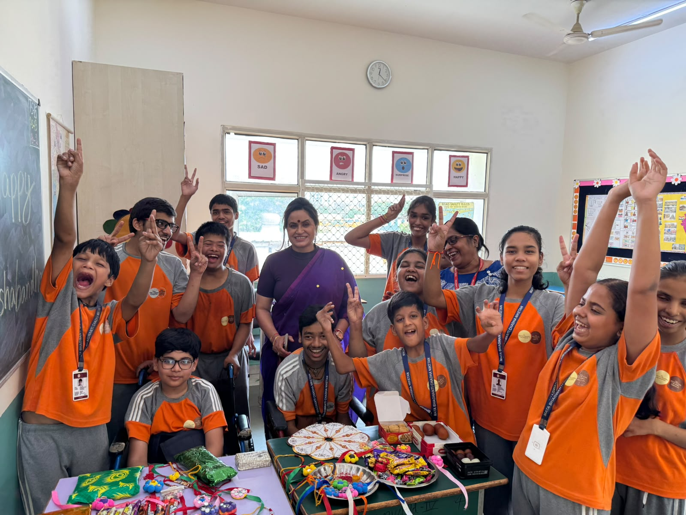
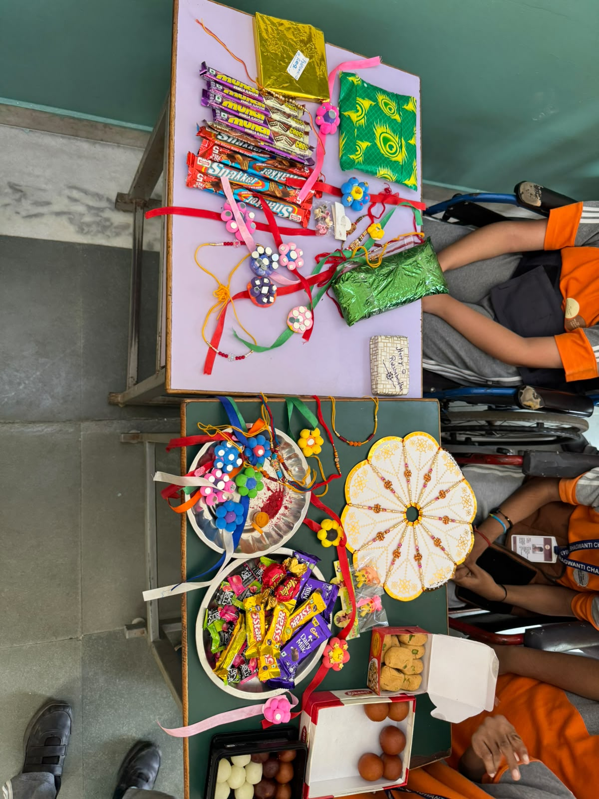
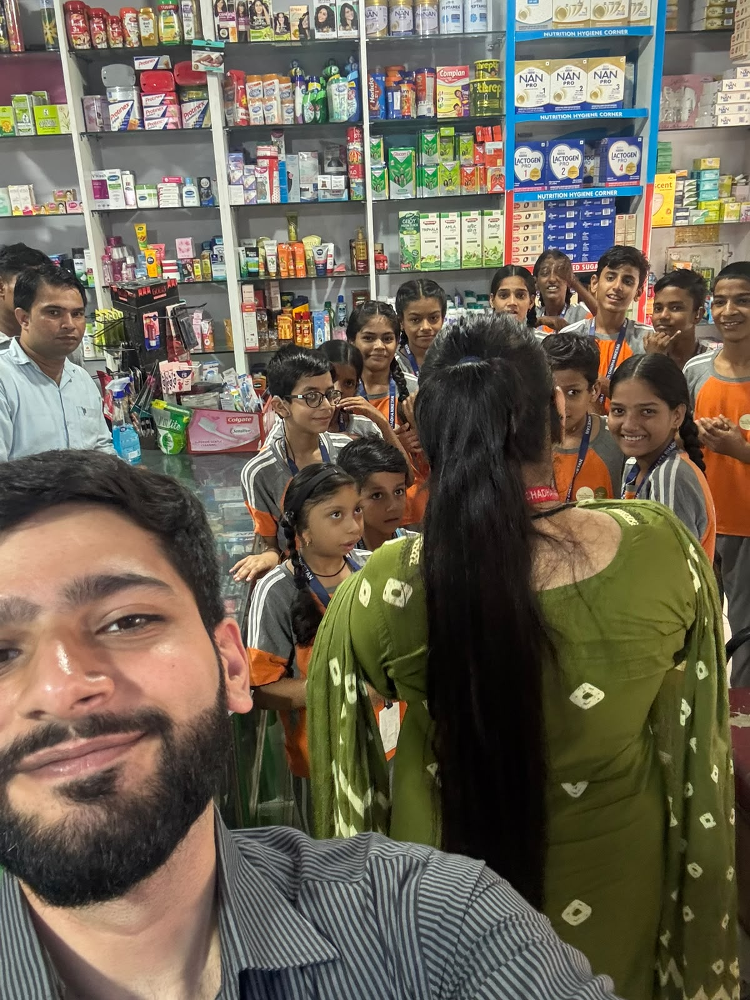
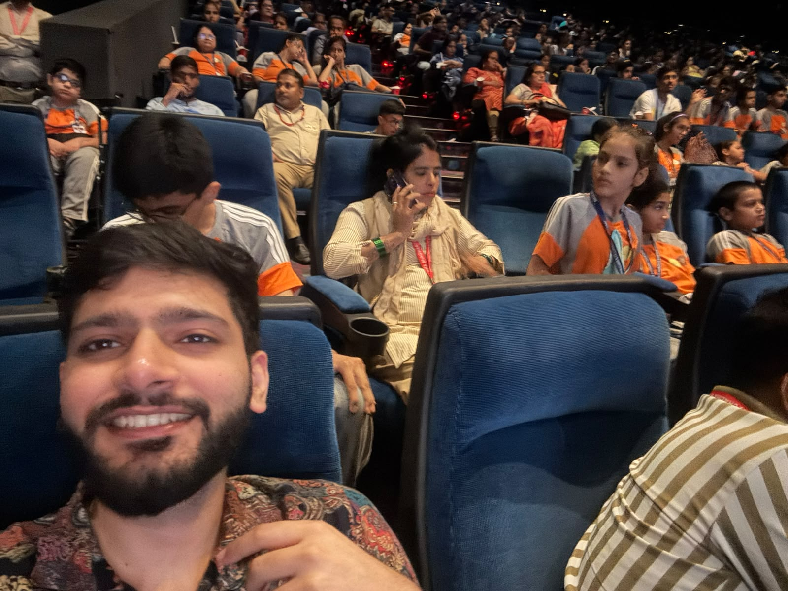
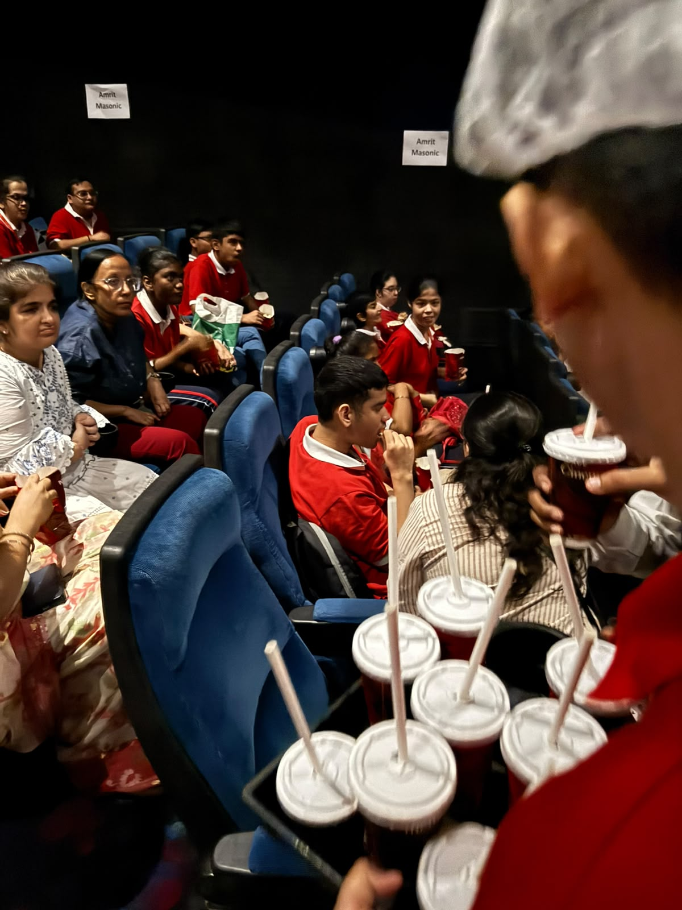
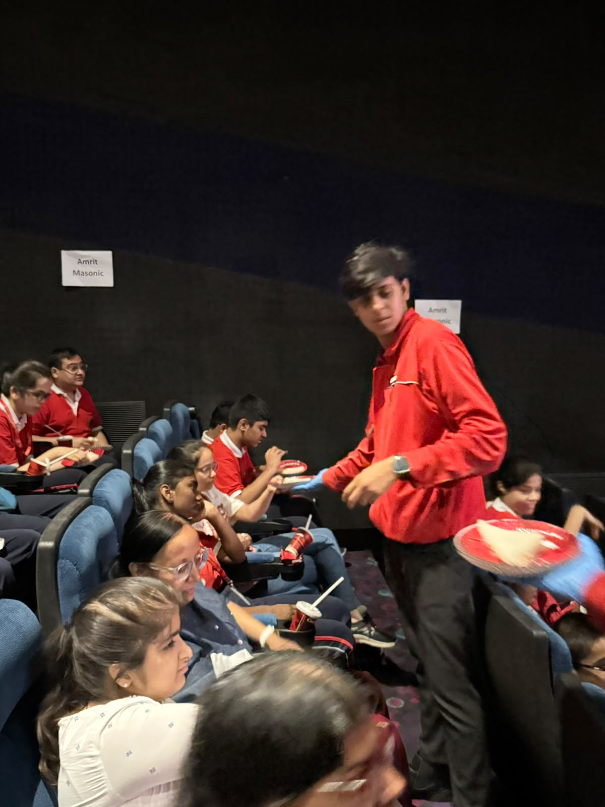
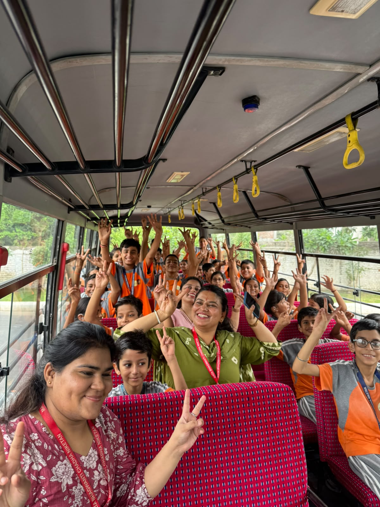
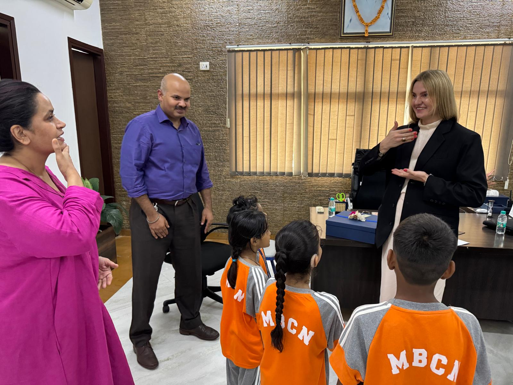
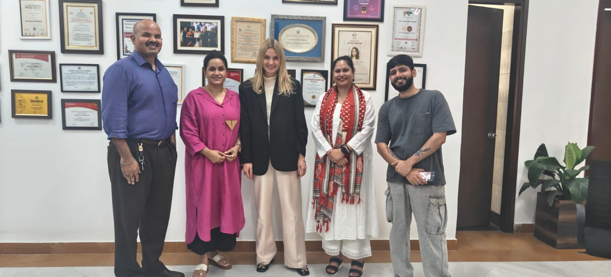
MBCN Special School · 500+ students · real-world excursions
A founder-led initiative. No middleman. Anmol shows up personally to serve meals to adults in underserved communities — because access to food is not a charity problem, it's a dignity problem.
This is not a donation drive run through a third party. Our founder goes out directly — carrying, serving, talking to people. The initiative is about connection as much as calories.
We believe that the people running tech companies should stay grounded in the communities their technology will eventually touch. Serving food is one way to stay honest about what actually matters.
"You learn more about your community in an afternoon of serving food than in a year of reading reports about it."
— Anmol, Founder · AdMagic4 out of 5 Canadians will be diagnosed with cancer in their lifetime. We volunteer and fundraise alongside CAMH and the Canadian Cancer Society because this is not a statistic — it's personal.
We run door-to-door fundraising campaigns, volunteer at awareness events, and help raise money for people actively battling cancer. Mental health and oncology are two of the most underfunded areas relative to their impact on families.
"If you're like me you probably know someone who has had cancer before. Personally, after losing a few members of my own family to it — there is just one thing we can all agree on until the cure is found: cancer sucks."
— Anmol, Founder · AdMagicEvery 4 out of 5 Canadians today will face a cancer diagnosis. That number doesn't leave room for indifference. We show up to fundraise, to knock on doors, and to stand alongside the people fighting it.
🎗️ Support the Canadian Cancer Society →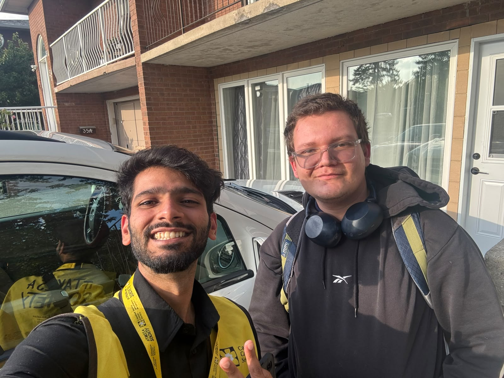
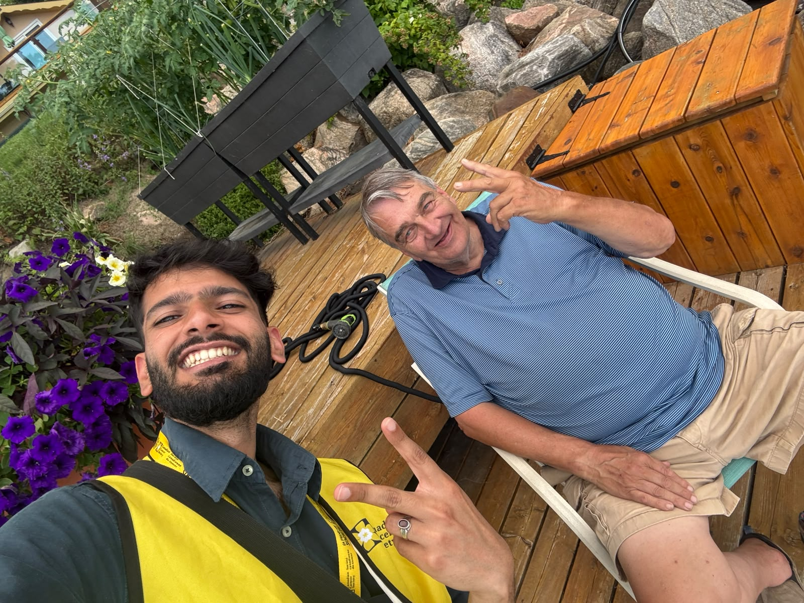
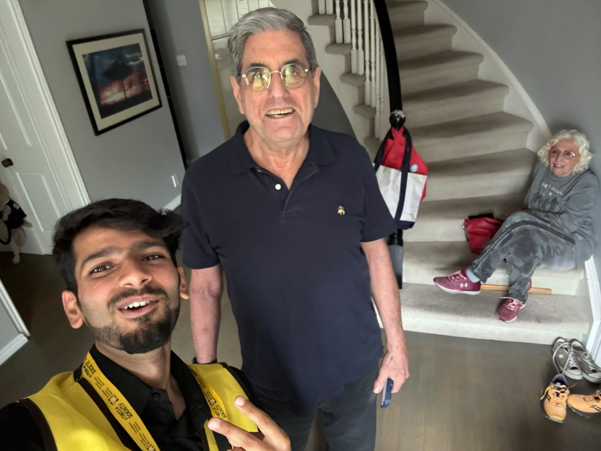
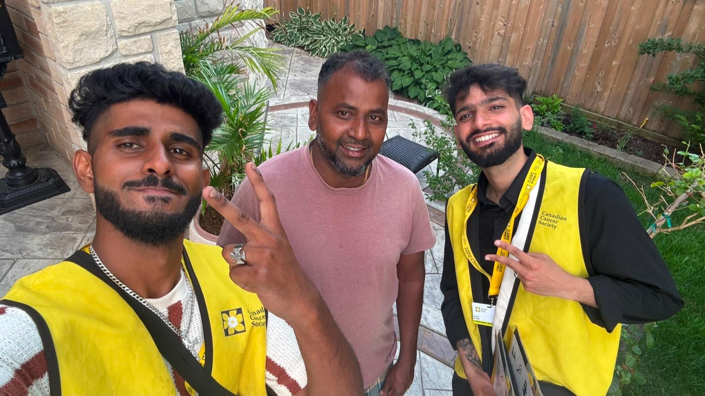
CAMH & Canadian Cancer Society campaigns · fundraising & volunteering
Our founder is pursuing a course at TMU (Toronto Metropolitan University) with an elective in Sustainable Entrepreneurship. Every AdMagic sale is a small act of growth — literally.
Every time a customer makes a purchase on AdMagic, a plant is watered and cared for in their name. Not a virtual badge — a real plant, tracked and tended as a small living commitment to the idea that business and nature don't have to be at odds.
The TMU Sustainable Entrepreneurship elective grounds our product decisions in a framework that asks: what does this cost the planet, and can we build a business model that actively gives back?
We also offset 100% of our cloud compute emissions and report quarterly. Smaller model inference, greener data centres, real accountability.